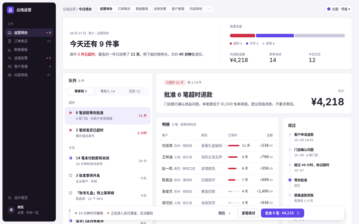
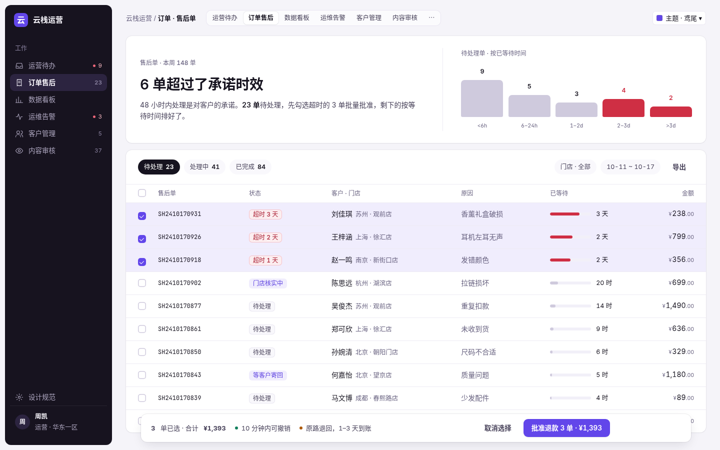
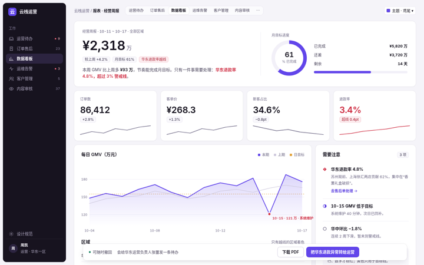
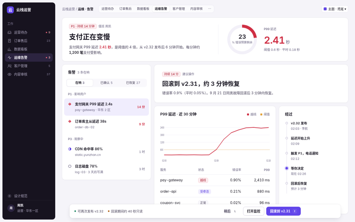
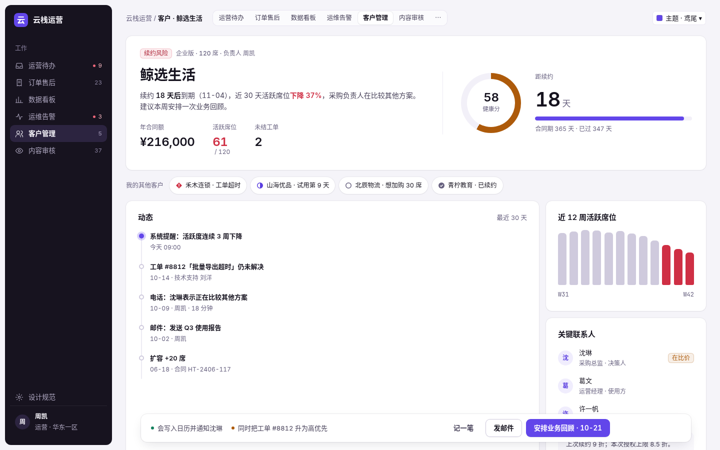
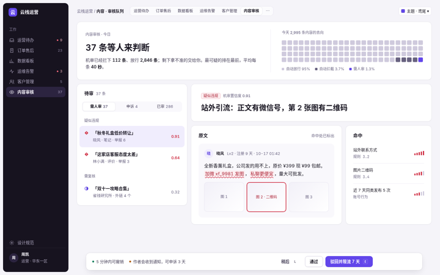

六个演示都只用 R15 规范：只用无衬线字体（层级靠字重和字号）、每页一张主图卡（一句结论或一个关键数）、细描边浅阴影的卡片、状态字形、浮动后果条，默认鸢尾，右上角可换主题（主题会带到演示页里）。不是每页都硬套队列：看板、列表、记录详情各自按最诚实的模式排，下表写明了怎么对应。

一天要办完的 9 件事排成队列，右侧当场批准 6 笔超时退款，J/K/E/Z 键盘流转。

售后单表格 + 筛选；勾选后底部出现后果条，按钮实时写出单数和金额。

经营周报：一句结论 + 4 个关键数 + 走势图；只有越线的点、行、数字是红色，黄色只做目标线。

支付网关延迟告警：结论写清起因和影响，曲线只把越线段标红，主操作是“回滚到 v2.31”。

企业客户档案：先写“续约 18 天后到期、活跃下降 37%”，再给动态时间脊和下一步。

待审内容逐条处理：原文命中处红色波浪线，右侧命中规则，驳回 / 通过都可撤销。
| 模式 | 什么时候用 | 骨架怎么变 | 不变的 | 演示 |
|---|---|---|---|---|
| 队列 | 一件件处理、每件都要做决定（审批、告警、审核） | 队列 400 + 当前事；办完自动下一件 | 侧栏 + 细描边卡片；只用无衬线；每页一张主图卡；状态字形 ○◐●◆，只有异常是红色；一屏一个主操作，钉在后果条右端，写清能否撤销 | 运营待办 · 运维告警 · 内容审核 |
| 列表 | 同类记录很多，要筛选、比较、批量处理 | 整宽表格 + 筛选条；后果条只在勾选后出现，按钮带数量和金额 | 订单售后 | |
| 看板 | 看整体状况、找异常 | 标题句 + 关键数 + 图表 + “需要注意”栏；图表用灰色和主色，越线才标红，黄色只做目标线 | 数据看板 | |
| 记录详情 | 围绕一个对象（客户、合同）长期跟进 | 窄队列 300 + 档案：结论 → 关键数 → 页签 → 动态时间脊；后果条给“下一步” | 客户管理 |